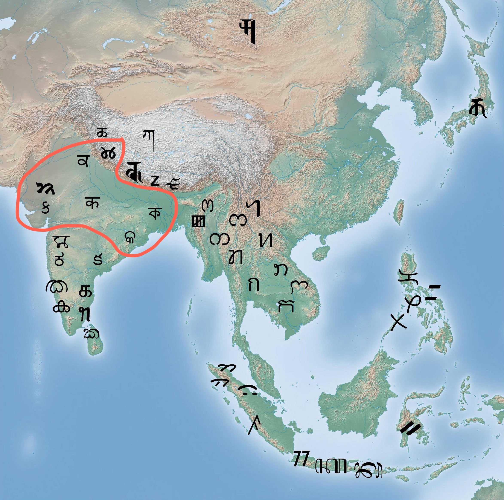
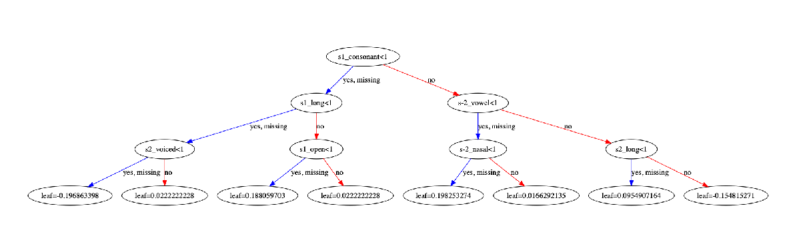

Supervised
Grapheme-to-Phoneme Conversion of
Orthographic Schwas
in Hindi and Punjabi
Aryaman Arora, Luke Gessler, Nathan Schneider
Contributions
- Motivation: Hindi and Punjabi text-to-speech
- State-of-the-art model using machine learning for schwa deletion, the hardest task in Hindi G2P conversion
- The first computational model in the literature for Punjabi schwa deletion
- Several scripts for parsing entries from the Digital Dictionaries of South Asia datasets
- Public release of all our code
Languages
| Language | Speakers | Region | Script |
|---|---|---|---|
| Hindi | 637.3 million (L1 + L2) | Central India | Devanagari |
| Punjabi | 32.6 million (L1 in India) | Punjab | Gurmukhi |
Both of these scripts are abugidas.
Abugidas
- Somewhere between an alphabet and a syllabary
- Orthographic unit: a consonant and a vowel diacritic, or a vowel by itself
- Employed in South Asia, Southeast Asia, Ethiopia, and Canada
Brahmi
Devanagari
- Hindi uses the Devanagari script
- G2P conversion is trivial, simple substitution of Devanagari with phonemes
| प ⟨p⟩ |
+ | ा ⟨ɑː⟩ |
= | पा ⟨pɑː⟩ |
| प ⟨p⟩ |
+ | े ⟨eː⟩ |
= | पे ⟨peː⟩ |
- One major exception (i.e. why this paper exists): schwa deletion
| प ⟨p⟩ |
+ | ∅ | = | प ⟨pə⟩ |
- Orthographically, the inherent schwa ⟨ə⟩ is applied to a plain consonant
-
Phonologically, due to historical changes, the inherent schwa is sometimes not pronounced
- No straightforward rules have been found by linguists
जंगली
forested
| जं | ग | ली | |
| Orthographic | ⟨d͡ʒəŋ | gə | liː⟩ |
| Phonemic | /d͡ʒəŋ | g | liː/ |
Past Approaches
- Linguistic accounts have explained it in terms of prosody (hierarchical phonological structures) or phonotactics (linear phonological sequences)
- Computational G2P systems have followed suit
Prosodic Structure
Tyson and Nagar 2009
Schwa Deletion in 2020
- Typical approach to G2P conversion: neural seq2seq
- We approach schwa deletion as a binary classification problem: either a schwa is deleted or it is not
-
Machine learning!
- Johny and Jansche (2018) proposed a novel machine learning approach to Bengali schwa realization
Methodology
Training Data and Features
- Scraped orthographic-phonemic pairs from dictionaries (two Hindi, one Punjabi)
- Force-aligned each pair to find missing schwas in the phonemic form
-
Featurization
- Encode for each phoneme in a k-wide window around the schwa
- Phonological features (e.g. vowel length, place of articulation)
- Tuned these parameters using grid search
| Dictionary | # Schwa Instances |
|---|---|
| McGregor (The Oxford Hindi-English dictionary) | 36,183 |
| Bahri (Learners' Hindi-English dictionary) | 14,082 |
| Google (Johny and Jansche, 2019) | 1,098 |
| Singh (The Panjabi Dictionary) | 34,576 |
Datasets we scraped and released.
An example entry from the Hindi training dataset.
Models
- Logistic regression (Sklearn)
- Multilayer perceptron neural network (Sklearn)
- Gradient boosted decision trees (XGBoost)
Results
- XGBoost model with the same hyperparameters achieves 95.00% accuracy for Punjabi
- First schwa deletion model for Punjabi
Discussion
Error Analysis
Analysis
- XGBoost generates best-fit decision trees that are human-readable
-
The system can learn phonotactics because we provide neighbourhood phonemes as feature
- Learning prosodic rules is more difficult because our features do not include e.g. syllable boundaries or weights
- Apparently phonotactics is more than enough
- We can use the trees to create phonotactic rules for schwa deletion!
Example
Conclusion
- We presented state-of-the-art schwa deletion models for Hindi and Punjabi (with code!) and accompanying datasets
-
Future research avenues
- "Weakened schwas" were marked in the McGregor dataset but what that means needs to be investigated (dialectal variation? phonemic or phonetic distinction?)
- Other Indo-Aryan languages still need schwa deletion models for G2P conversion but datasets are not easily available